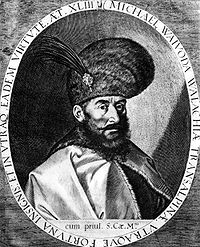

Mihai Viteazu
Mihai Viteazul sau Mihai Bravu (n. 1558, Targul de Floci - d. 9 august 1601, Turda) a fost banisor de Strehaia, stolnic domnesc si ban al Craiovei, apoi Domn al Tarii Romanesti si, pentru o perioada (in 1600), conducator al tuturor celor trei tari medievale care formeaza Romania de astazi: Tara Romaneasca, Transilvania si Moldova.
Unirea de la 1600
Transilvania
Tarile aflate la 1600 sub domnia lui Mihai Viteazul
Domnia lui Ieremia Movila, devotat polonezilor, insemnase practic indepărtarea Moldovei de Sfanta Alianta. In Transilvania, Sigismund renunta la tron in favoarea varului sau, Andrei Bathory (de asemenea inclinat catre politica polona).
In iulie 1599 a trimis o solie la Praga pentru a cere incuviintarea imparatului Rudolf al II-lea pentru punerea in practica a initiativei sale. Primind un raspuns favorabil, la sfarsitul aceluiasi an, intra in Transilvania prin pasul Buzau cu o armata formata din romani si mercenari de diferite etnii: unguri si secui din Ardeal, polonezi, sarbi etc. Dupa victoria asupra lui Andrei Bathory (Batalia de la Selimbar, 18/28 octombrie 1599) isi face intrarea triumfatoare la Alba Iulia pe 1 noiembrie 1599 primind cheile fortaretei de la episcopul Demetrius Napragy. Chiar daca a fost recunoscut de Dieta doar ca guvernator imperial, Mihai a fost conducatorul al Transilvaniei.
Moldova
In mai 1600, Mihai Viteazul il alunga de pe tronul Moldovei pe Ieremia Movila, invingandu-l la Bacau, si realizeaza astfel, prima unire a tarilor romane. Titulatura folosita de voievod (intr-un document din 6 iulie 1600) era: "Domn al Tarii Romanesti si Ardealului si a toata tara Moldovei". La recomandarea marii boierimi, Mihai a numit un domn în Moldova, subordonat siesi
